作業環境 ／ 対象システムの概要
クラス図 ／ オブジェクト図
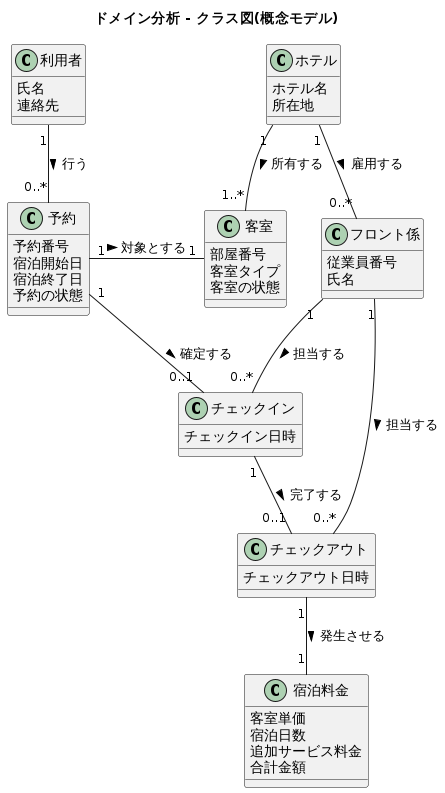
クラス図で整理した概念が、実際のインスタンスとしてどのようにつながるかを示す。
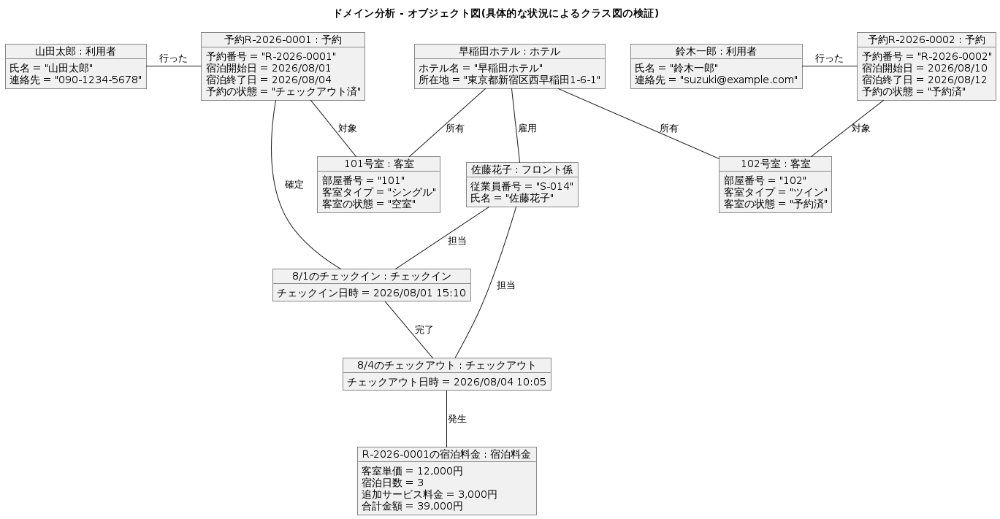
ユースケース図 ／ ユースケース記述
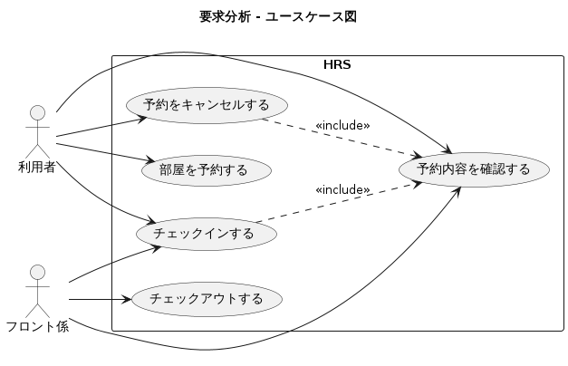
予約 ／ チェックイン ／ チェックアウト
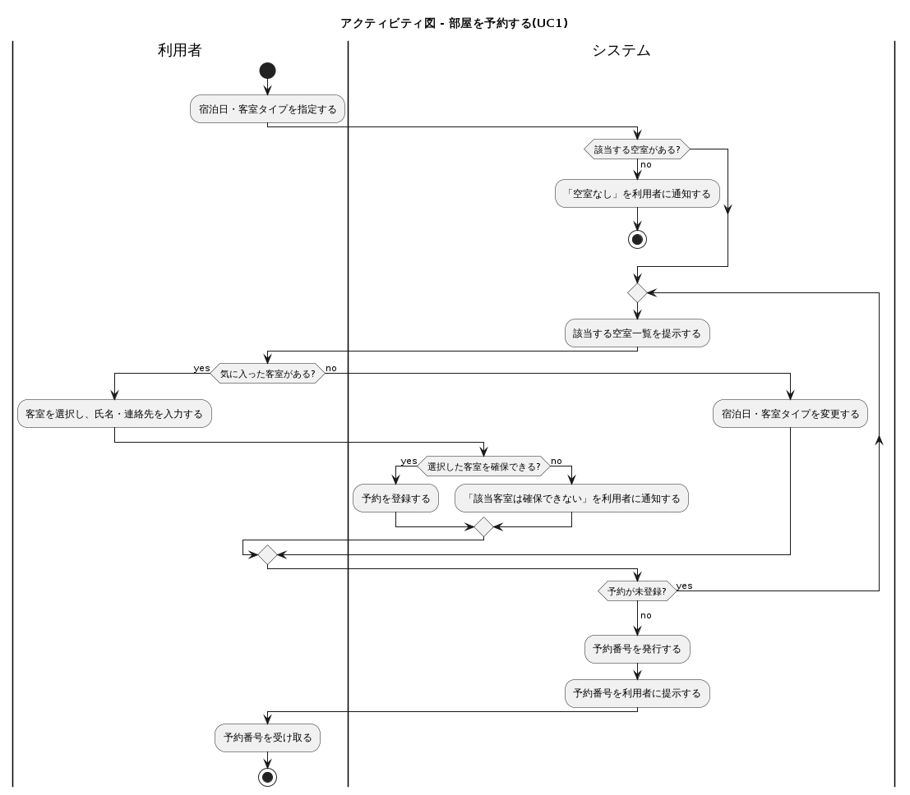
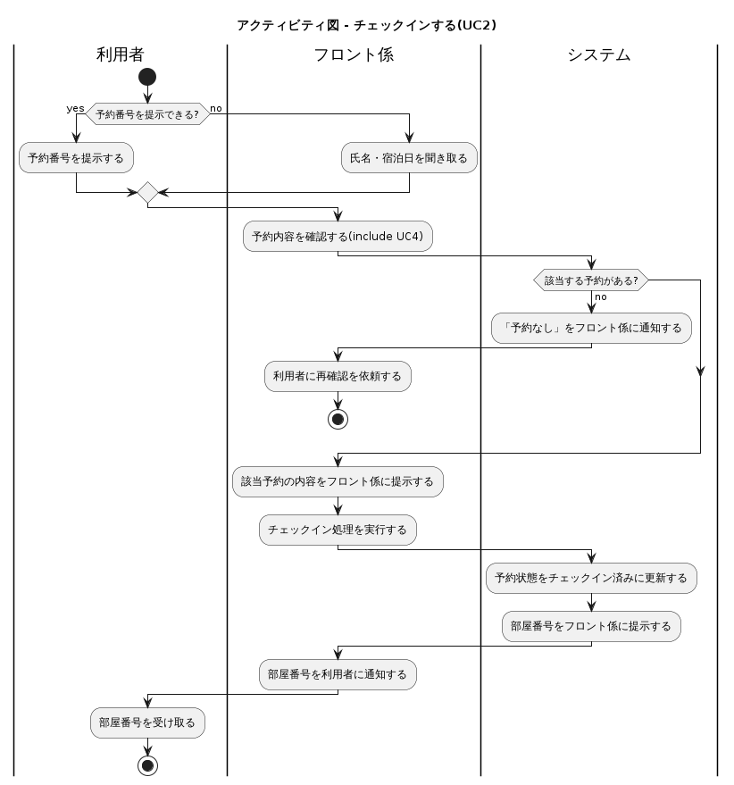
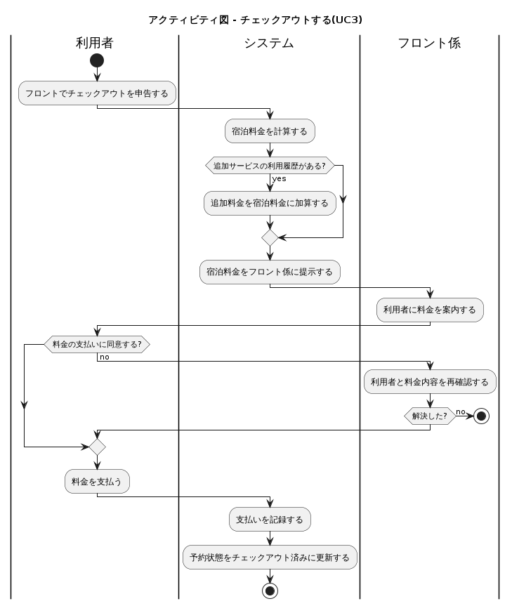
Boundary ／ Control ／ Entity
UC1〜UC5 のメッセージ交換
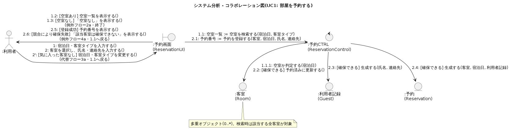
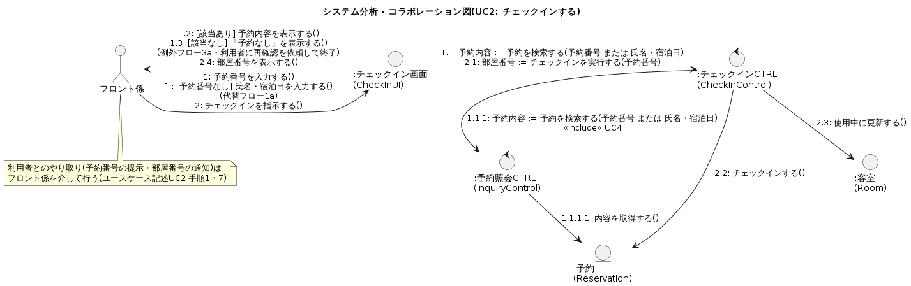
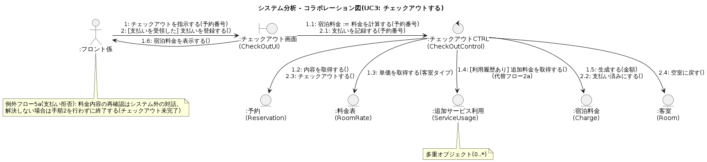
UC2（チェックイン）・UC5（キャンセル）から
include される共通処理。
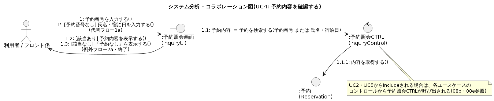
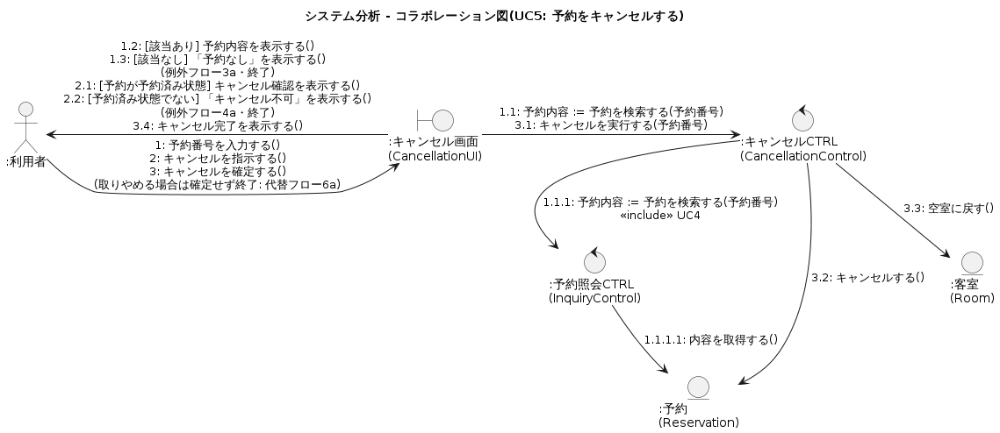
BCE全クラスの属性・操作・関連
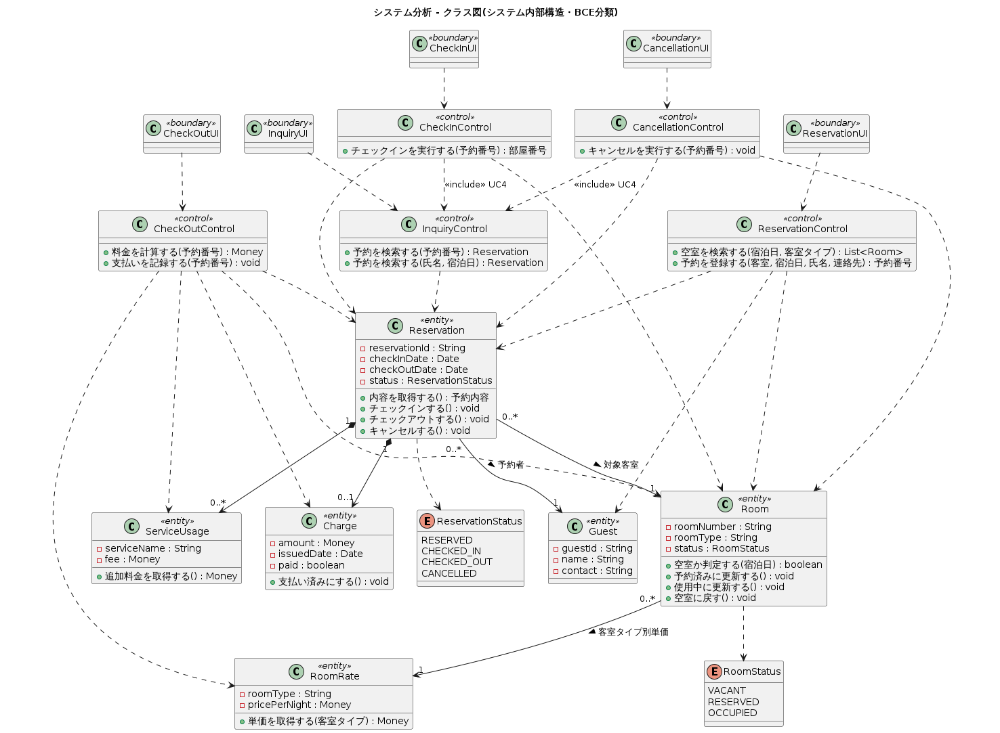